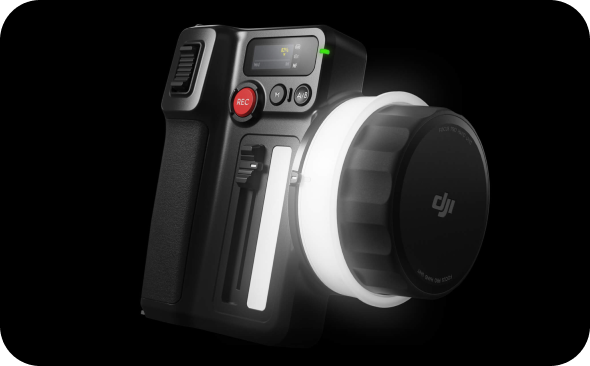
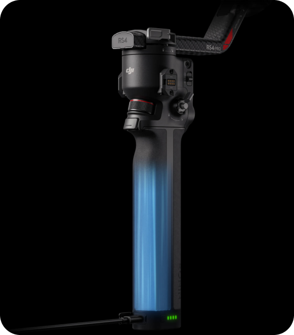
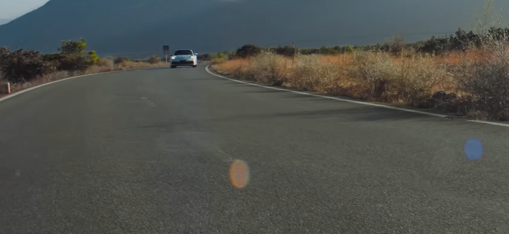
O DJI RS 4 Pro é um estabilizador expansível de ponta, com integração perfeita com o sistema de controle de lentes DJI Focus Pro, DJI Transmission e com um vasto ecossistema de controle. Essa sinergia traz uma solução de produção em grande escala que une estabilização, transmissão, monitoramento, foco e controle para a indústria cinematográfica e televisiva. Amplie os horizontes de possibilidades criativas, permitindo que você libere todo o seu potencial de cinegrafista.
Repleto de recursos
Excelente estabilidade,
padrões excepcionais
Estabilização profissional
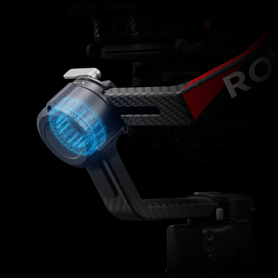
O DJI RS 4 Pro apresenta um aumento de 20%[2] no torque do motor em três eixos, oferecendo maior redundância de energia quando balanceado. Isso ajuda a garantir que o gimbal permaneça responsivo e preciso nos movimentos de rastreamento, mesmo com câmeras pesadas ou com vários acessórios. Além disso, fornece energia suficiente para suportar a estabilização do gimbal em vários cenários de gravação.
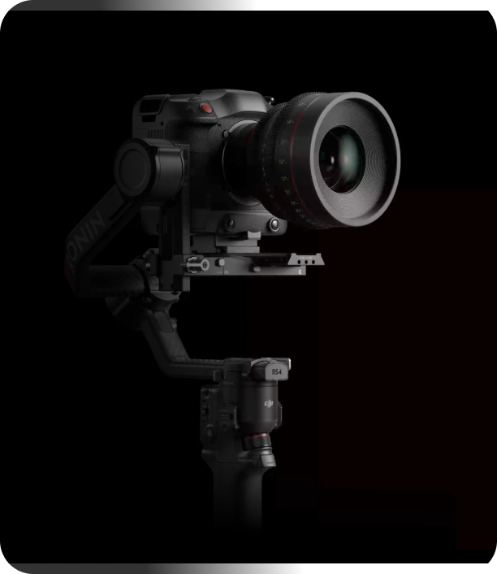
Projetado com uma placa horizontal totalmente nova, o DJI RS 4 Pro permite a segunda geração de disparo vertical nativo para maior eficiência. Basta liberar a base horizontal e fixá-la na posição vertical para alternar facilmente as gravações verticais. [1]
Gravação vertical nativa da 2ª geração
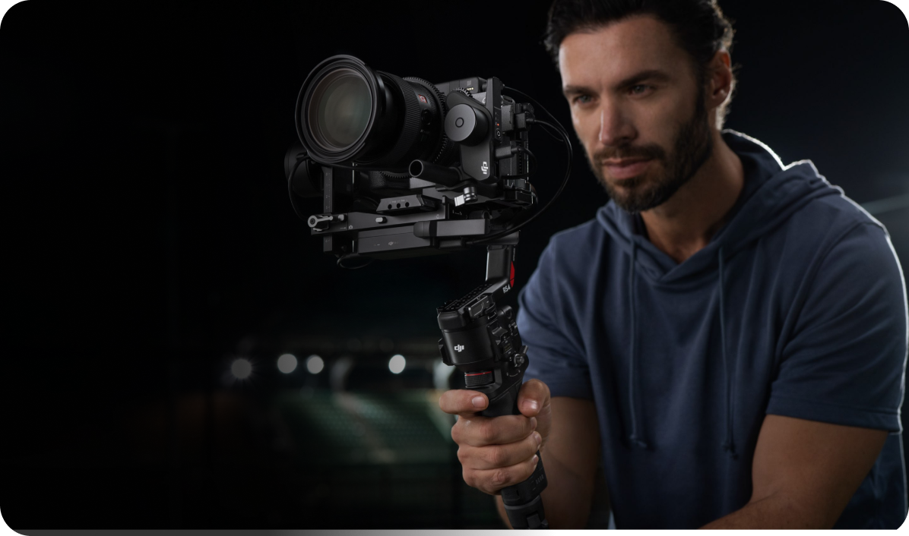
Equipado com braços de eixo de fibra de carbono, o DJI RS 4 Pro possui uma capacidade de carga útil de 4,5 kg, bem como potência e torque robustos. Acomode facilmente as principais configurações de lente e câmeras sem espelho e cinematográficas.
Carga útil poderosa
Verifique a lista de compatibilidade de câmeras e lentes
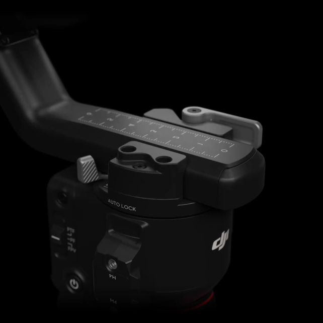
Agora, o eixo de rotação possui rolamentos, o que facilita os ajustes. Todos os três eixos apresentam revestimento de Teflon™, com baixo coeficiente de atrito, garantindo equilíbrio suave mesmo na montagem de câmeras pesadas.
Ao trocar de câmera ou lente, um botão de ajuste fino no eixo de inclinação permite movê-la para frente ou para trás, alcançando um equilíbrio preciso em nível milimétrico. A base de rápida liberação superior possui um guia de posicionamento ajustável que evita que a câmera se solte ou desloque sozinha.
Estabilidade de calibração
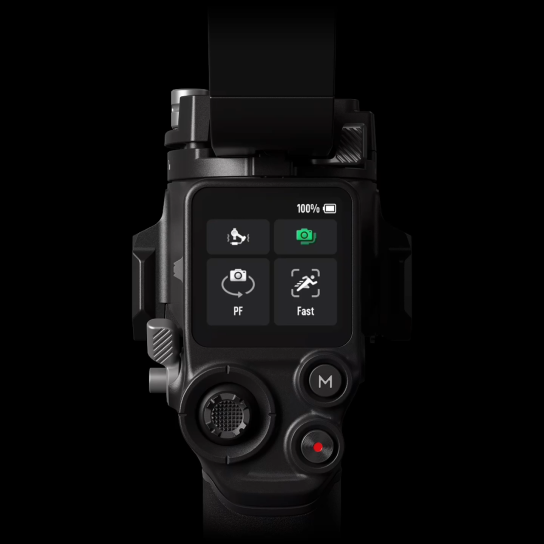
A tela de OLED sensível ao toque incorpora um novo recurso de bloqueio automático, evitando toques acidentais durante a filmagem. Quando bloqueada, a tela ainda exibe os modos atuais do gimbal e do joystick com baixo brilho, reduzindo o consumo de energia.
Bloqueio automático da tela
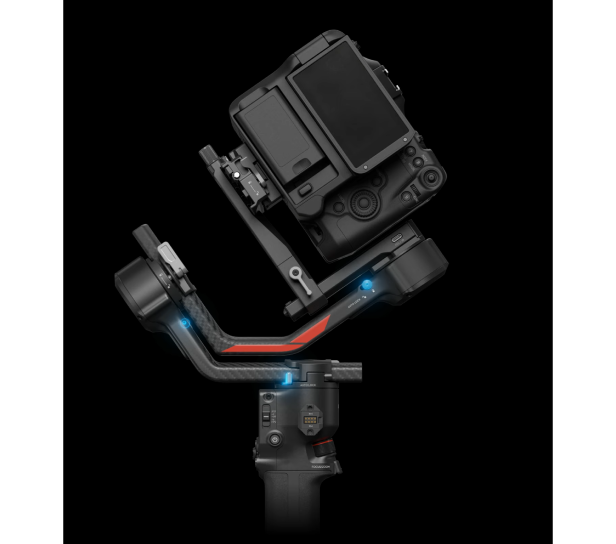
Com os bloqueios de eixo automatizados de última geração, o DJI RS 4 Pro pode começar a trabalhar rapidamente ou entrar no modo de suspensão, melhorando significativamente a eficiência de gravação, transição e armazenamento. As travas dos eixos foram atualizadas de forma a reduzir os espaços, limitando ainda mais os tremores do estabilizador.
Travas automáticas dos eixos da 2ª geração
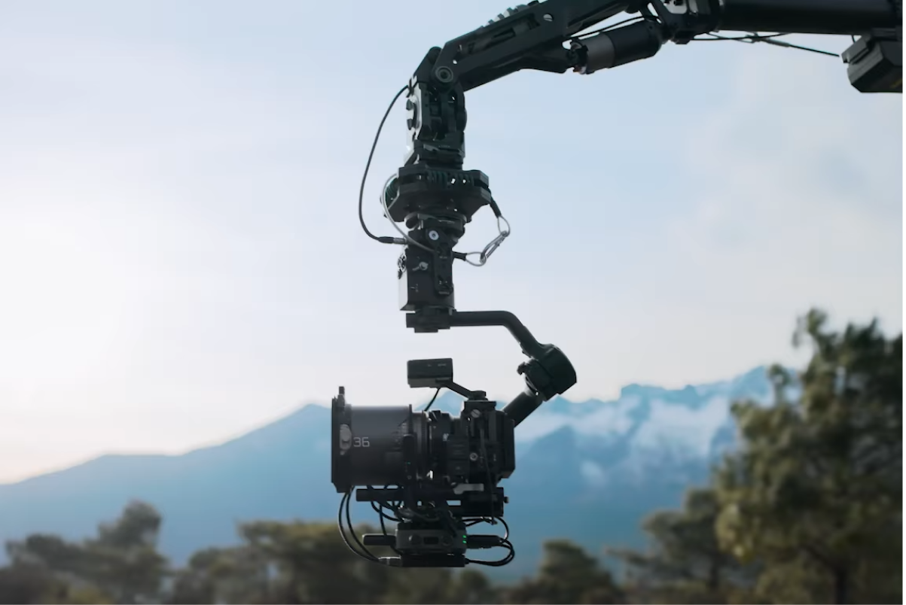
O novo Modo de Suporte para Automóveis otimiza os algoritmos de estabilização do estabilizador, com base nas vibrações do veículo e nos dados de resistência ao vento, garantindo gravações mais nítidas mesmo quando capturadas em um veículo em movimento.
Modo de Suporte para Automóveis
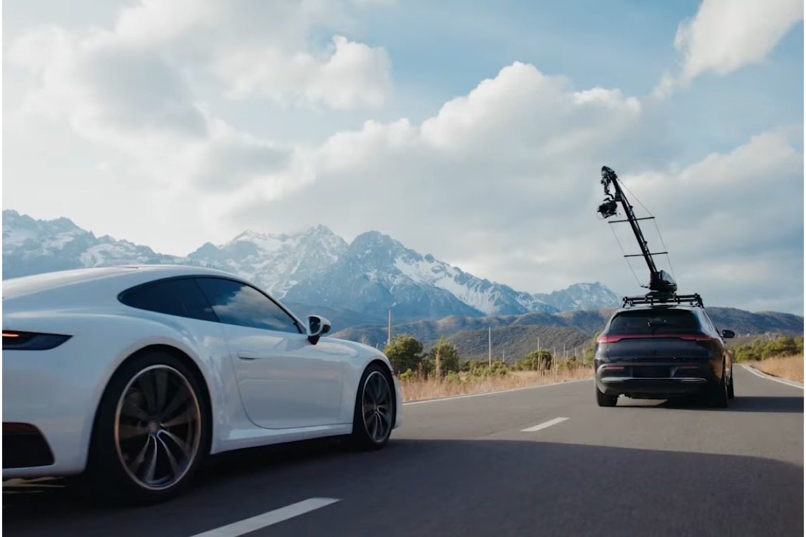
O algoritmo de estabilização RS de 4ª geração foi otimizado de forma abrangente para diferentes cenários de uso. Ele atinge um equilíbrio superior entre a força de estabilização e a sensação tátil do movimento da câmera, proporcionando excelente desempenho e uma experiência de usuário aprimorada.
Impulsionado pelos algoritmos de estabilização da 4ª geração do RS, o DJI RS 4 Pro traz estabilidade significativamente aprimorada em gravações verticais, dominando facilmente cenas dinâmicas, como em corridas ou gravações em ângulos baixos.
Algoritmos de estabilização da 4ª geração do RS
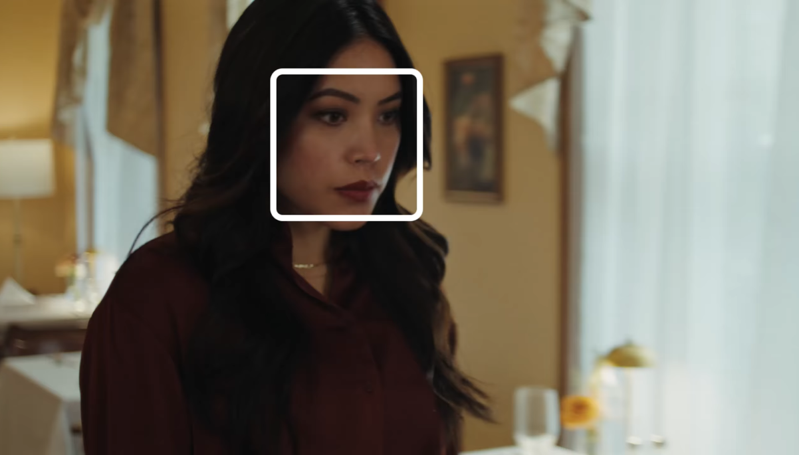
Quando combinado com o novo Focus Pro LiDAR [3] e o Focus Pro Motor [4], o DJI RS 4 Pro permite que os cineastas solo experimentem um foco automático LiDAR mais preciso, distante e inteligente, obtendo controle sobre a expressão cinematográfica em cenários dinâmicos de filmagem.
Foco LiDAR inteligente para gravações confiáveis
O salto de 77% aprimora a detecção [5] de bordas de objetos e humanos, além de reduzir, efetivamente, a busca por foco.
pontos de alcance
76.800
Concentre-se em alvos em movimento com a coleta mais rápida de informações do alvo e a velocidade aprimorada do Motor Focus Pro.4]
Taxa de atualização do LiDAR de 30 Hz
30 Hz
Benéfico para composições de borda e close-ups, proporcionando um espaço de enquadramento maior.
Campo de visão
70°
A distância de foco do LiDAR ao alvo humano foi prolongada em 20 metros, aproximadamente três vezes maior se comparada à geração anterior [5], garantindo gravações sem esforços com lentes telefoto.
Distância máx. de transmissão [6]
20 m
Mais responsivo nos controles de foco, zoom e abertura.
Aumento da velocidade do motor[5]
30%
Mais mainstream e versátil.
Haste universal
15 mm
Resposta rápida para operação perfeita.
Menor latência[7]
10 ms
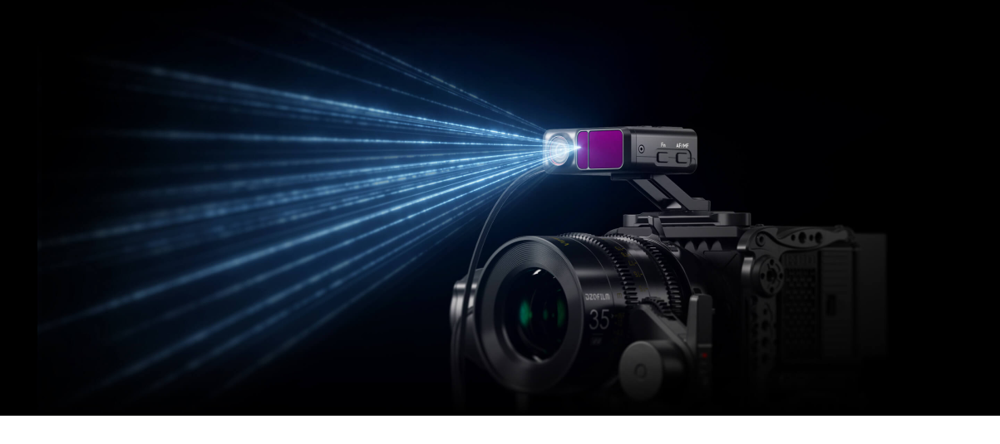
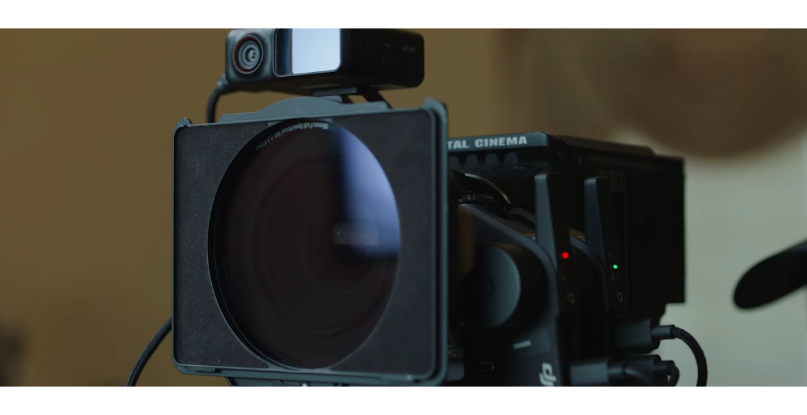
Aproveitando o novo Focus Pro LiDAR [3] e algoritmos de IA, o ActiveTrack Pro de última geração permite que o gimbal de três eixos do DJI RS 4 Pro rastreie o alvo com firmeza. Mesmo que esteja parcialmente encoberto, ele pode ser rapidamente reposicionado e manter o foco.
O ActiveTrack Pro também apresenta excelente desempenho de reconhecimento e rastreamento em cenários que envolvem vários alvos ou quando ele está distante.
ActiveTrack Pro
Processador de última geração
O desempenho aprimorado do motor oferece um controle ainda mais preciso, proporcionando uma linguagem cinematográfica cada vez mais versátil.
DJI Focus Pro
Motor
DJI Focus Pro fornece uma solução de controle de lente abrangente e poderosa para cineastas. Tanto as criações individuais quanto as colaborações em equipe podem acessar facilmente o foco automático LiDAR inteligente, bem como o controle multicanal de foco, abertura e zoom para domínio dinâmico de cada momento de foco.
controle de foco
Ecossistema de
Soluções profissionais
DJI RS 4 Pro oferece suporte a várias configurações portáteis, incluindo configurações de pasta, alça dupla e montagem em anel. [12] Além disso, ele pode usar o protocolo DJI RS SDK para estabelecer soluções com suportes para carro, lanças, Steadicam, câmeras de cabo e controles deslizantes [12] atendendo às necessidades criativas de cenários completos.
O DJI RS 4 Pro possui um novo interruptor que permite controlar o movimento do estabilizador ou do zoom da lente direto no joystick. No Modo de Controle de Zoom, cinegrafistas podem optar entre o zoom motorizado para lentes PZ com imagem nítida [8] e o zoom do motor de foco externo.
Quando combinado a dois motores Focus Pro [4], o DJI RS 4 Pro permite que cinegrafistas ajustem o zoom da lente e controlem o foco com precisão por meio do interruptor de forma simples e estável.
alta eficiência
Controle de lente de
Mestre da versatilidade
Gravações profissionais
Duração prolongada da bateria
Desempenho profissional
Escalação aprimorada
Ecossistema profissional
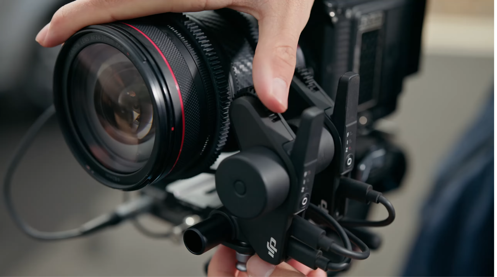
Motores duplos de foco
e zoom para desempenho elevado
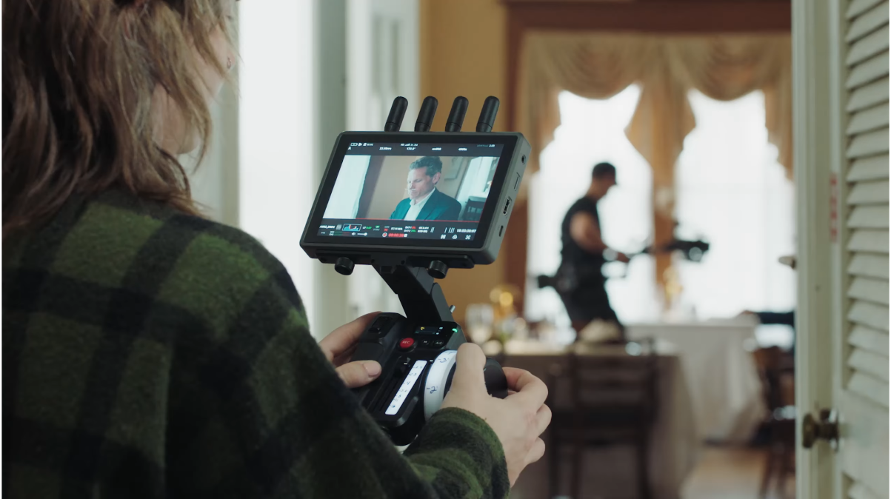
Sistema de controle remoto
para colaboração profissional
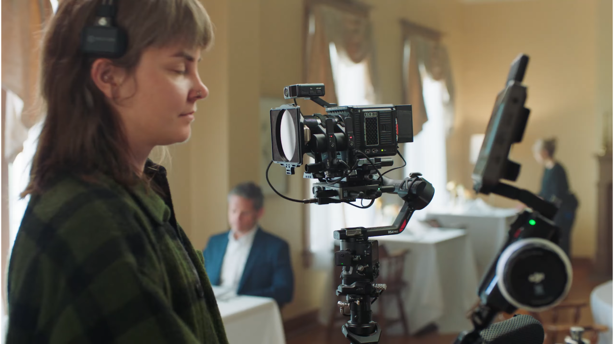
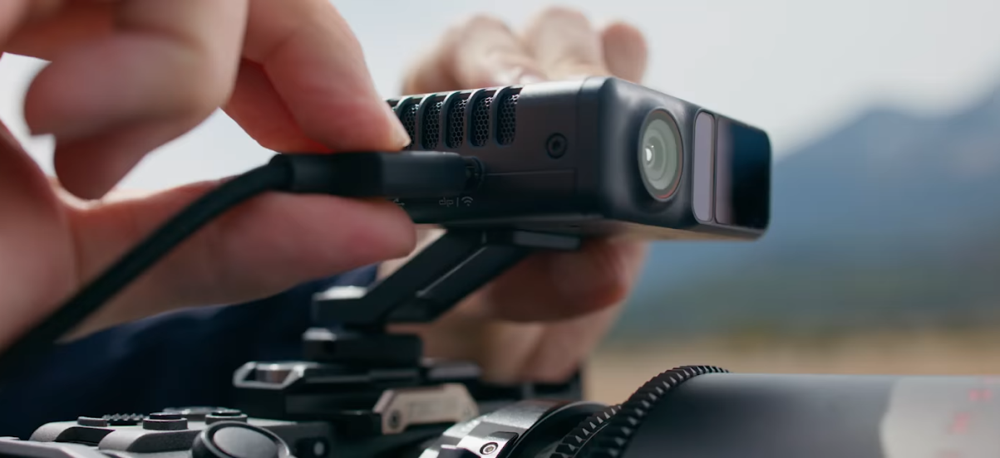
Em gravações colaborativas em equipe, o operador do estabilizador pode controlar o DJI RS 4 Pro por meio de dispositivos, como DJI Master Wheels, DJI Ronin 4D Hand Grips e DJI High-Bright Remote Monitor.[3] O operador de foco também pode ativar o formato de ondas LiDAR no monitor remoto de alto brilho para assistência de foco inteligente[9], permitindo um controle mais preciso com a unidade portátil Focus Pro.
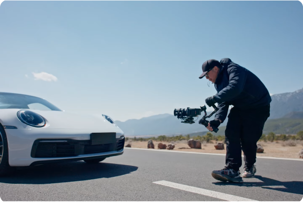
O DJI Focus Pro inaugura a inovadora tecnologia de foco automático LiDAR e apresenta uma unidade de controle manual de amortecimento magnético de alta precisão: a unidade portátil Focus Pro [3].
Unidade portátil DJI Focus Pro
Suporta controle FIZ, dominando o poder de foco, íris e zoom com facilidade.
Canais de controle
FIZ
Suporta filmagens em veículos e tomadas únicas a longa distância.
Distância de comunicação
160 m
Fornece feedback tátil de retorno elástico para pontos finais, facilitando um foco mais preciso em um caminho fixo ou em dois assuntos em posições estáticas.
Marcação eletrônica
Pontos A-B
Permite iniciar ou parar remotamente a gravação da câmera [8], melhorando a eficiência da filmagem com câmeras de cabo, jibs e outros suportes.
Funcionalidade bluetooth
Iniciar/interromper
a gravação
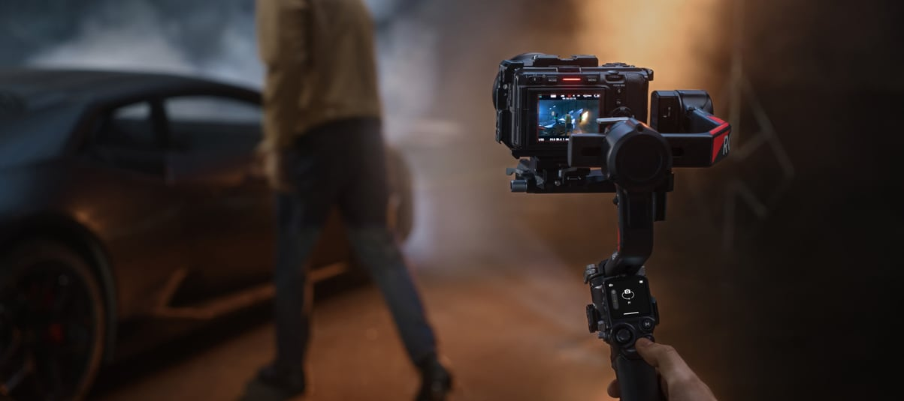
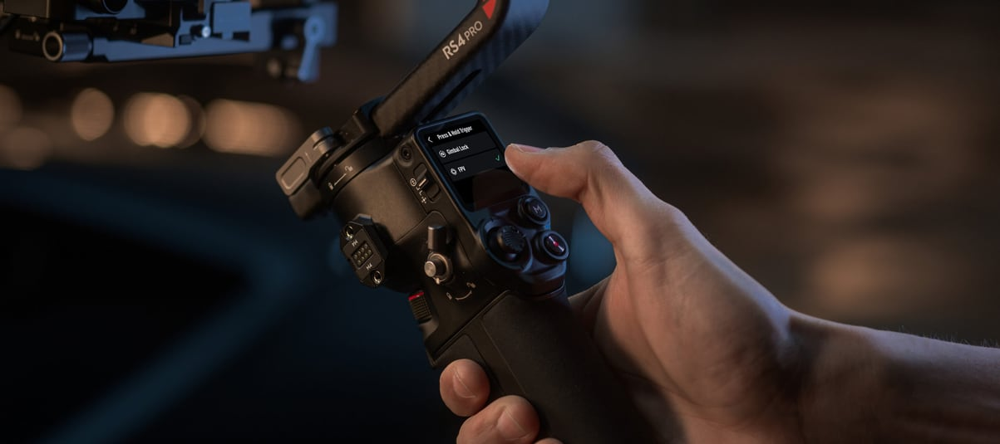
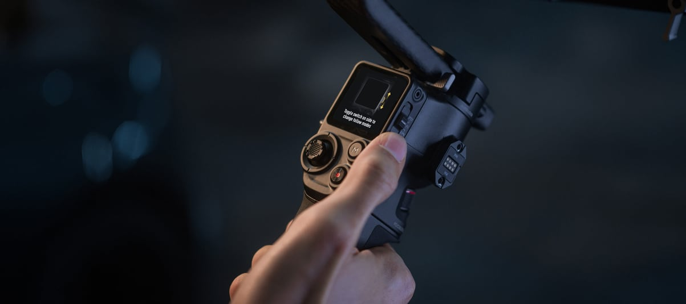
Conectividade bluetooth, controle sem fio
Personalização da função do acionador
Interruptor de modo do estabilizador
DJI RS 4 Pro adota tecnologia bluetooth de modo duplo e suporta obturador sem fio e controle de zoom sem fio. Após alternar o modo do joystick ao controle de zoom, é possível usar o joystick para executar zoom motorizado para lentes PZ, bem como zoom com imagem nítida.[8]
A função do acionador pode ser personalizada ao modo FPV, no qual pressionar e segurar o acionador faz com que os três eixos do estabilizador sigam a direção do movimento do cabo. O que é particularmente útil ao fazer gravações rotacionais ou simular um POV.
Alterne o interruptor do modo do Estabilizador de PF, PTF e FPV. Você também pode substituir o modo FPV pelo modo 3D Roll 360 ou modo Personalizado com base em sua preferência e requisitos de fotografia, garantindo uma operação perfeita.
Continue filmando! Com o punho de bateria de alta capacidade DJI RS BG70 [3],estenda a autonomia da bateria do DJI RS 4 Pro para 29 horas. O cabo da bateria é capaz de carregar sua câmera e acessórios, com até 18W, por meio da porta USB-C na parte inferior.
Cabo de alta capacidade da bateria
Duração da bateria [10]
29 horas
Potência máxima de saída
18 W
Carga completa rápida [11]
2,5 horas
Carregamento rápido PD
45 W
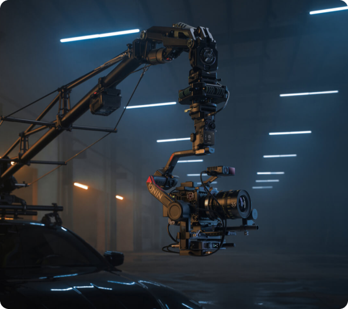
O DJI RS 4 Pro pode alimentar o Focus Pro LiDAR [3] e o Transmissor de Vídeo DJI [3] simultaneamente, por meio do Focus Pro LiDAR para DJI Transmission Cable Hub [3], eliminando a necessidade de uma montagem em V externa.
O Transmissor de Vídeo DJI também pode ser facilmente montado diretamente na parte inferior do DJI RS 4 Pro, por meio da sapata fria, reduzindo a carga da configuração portátil.
Instalação integrada e fonte de alimentação
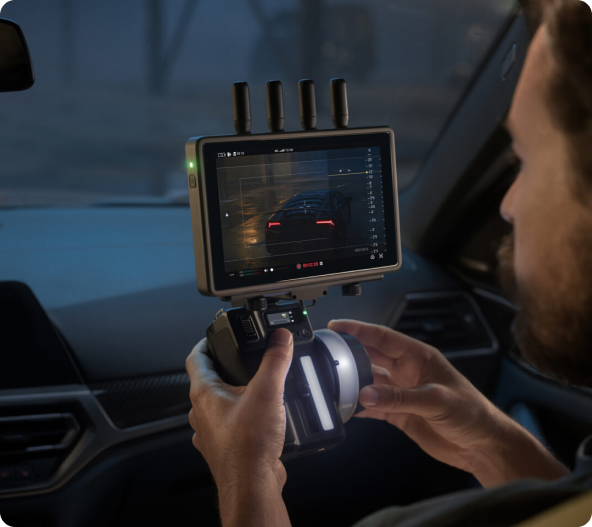
Com as alças do cabo do Ronin 4D [3] e o monitor remoto com brilho intenso, [3] você pode selecionar alvos de foco LiDAR, alternar entre modos de foco e habilitar o formato de ondas LiDAR.[9]
Assistência de foco inteligente
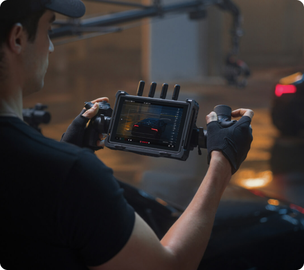
Em conjunto com os punhos Ronin 4D [3], unidade manual Focus Pro [3], Master Wheels [3] e monitor remoto de alto brilho [3], você pode controlar remotamente o gimbal, os parâmetros de câmera e foco, alcançando um processo criativo integrado que abrange recepção, monitoramento e controle.
Controle do estabilizador/foco/câmera
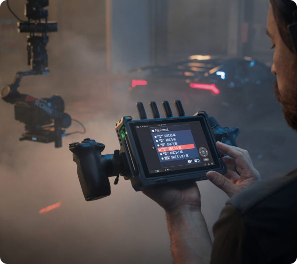
Quando o DJI RS 4 Pro é montado em suportes como uma lança, câmera de cabo ou ventosa de veículo, você pode controlar diretamente as operações do menu principal da Sony e de outras câmeras sem espelho por meio do modo Mirro Control, no monitor remoto de alto brilho [3], sem precisar desconectar sua câmera.
Modo de
controle espelhado
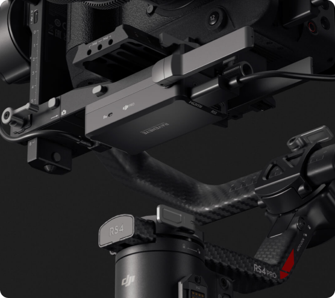
Tanto cinegrafistas solo quanto pequenas equipes podem utilizar o Transmissor de imagens do Ronin [3] para transmissões ao vivo de alta definição, controle remoto do estabilizador e da câmera, ActiveTrack 4.0, Force Mobile e muitos outros recursos, alcançando uma experiência de gravação integrada com capacidades de monitoramento e controle.
Compatível com o Transmissor de imagens (DJI Ronin)
Compatibilidade com a DJI Transmission
DJI Brasil agora tem seu canal oficial para a compra dos seus produtos.
Este é o canal oficial da DJI no Brasil.
Comprando aqui, no site oficial, você tem a segurança de receber um produto original, regulamentado, certificado pelas agências nacionais competentes e ainda fica 100% protegido pela nossa garantia e assistência.
ATENÇÃO: não nos responsabilizamos por produtos adquiridos em outros canais que não os oficiais.
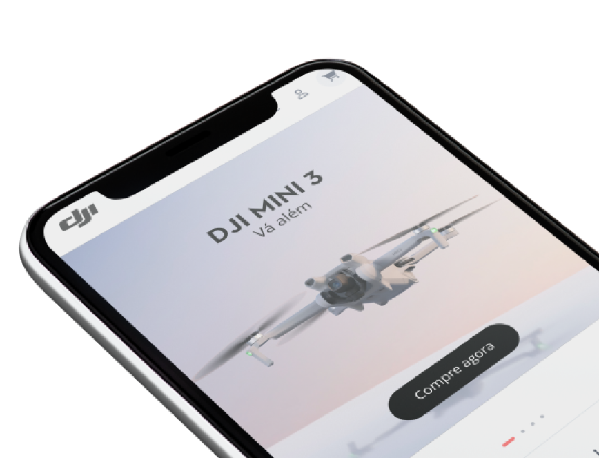
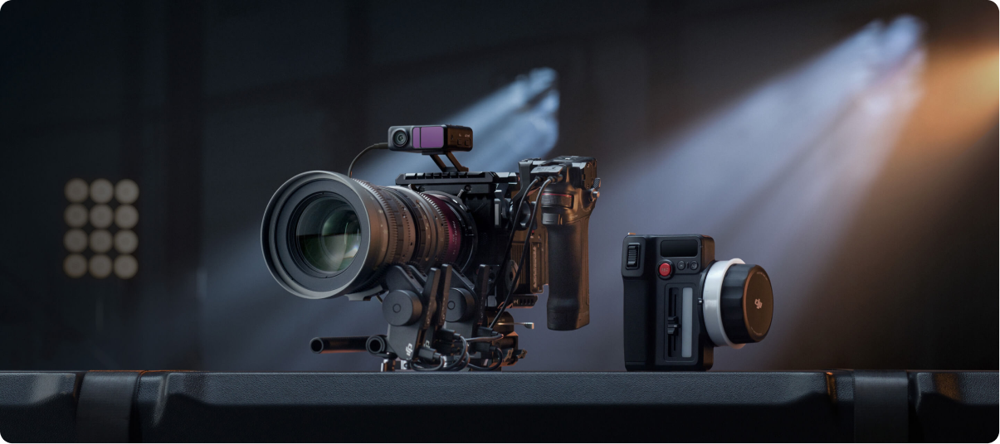
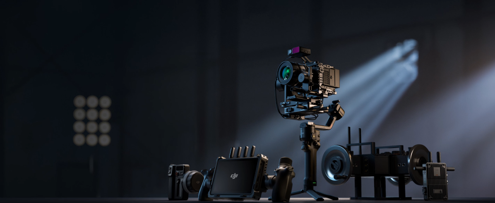
Vá além
DJI RS4 PRO
Na caixa:
Estabilizador DJI RS 4 Pro Standard BR
1x Estabilizador
DJI RS 4 Pro
1x Base de
liberação rápida
1x Suporte de
fixação da lente
2x Cabos de controle
multicâmeras USB-C (30 cm)
1x Cabo de carregamento
USB-C (40 cm)
1x Cabo de carregamento
USB-C (30 cm)
1x Alça de
suporte ajustável
Estabilizador DJI RS 4 Pro Combo BR
1x Estabilizador
DJI RS 4 Pro
1x Base de
liberação rápida
1x Suporte de
fixação da lente
2x Cabos de controle
multicâmeras USB-C (30 cm)
1x Cabo de carregamento
USB-C (40 cm)
1x Alça de
suporte ajustável
1x Cabo de carregamento
USB-C (20 cm)
1x Cabo MiniHDMI para
MiniHDMI (20 cm)
1x Cabo MiniHDMI para
HDMI (20 cm)
1x Cabo MiniHDMI para
MicroHDMI (20 cm)
1x Transmissor de
imagem Ronin
1x Faixa de engrenagem
de foco
1x Base de
liberação rápida
1x Placa inferior de
liberação rápida
(estendida)
1. O estabilizador requer reequilíbrio após alternar entre disparo horizontal e vertical.
2. Comparado ao DJI RS 3 Pro.
3. Vendidos separadamente.
4. O Combo DJI RS 4 Pro inclui o DJI Focus Pro Motor. Na versão individual, o motor é vendido separadamente.
5. A melhoria de 77% nos pontos de alcance e a triplicação do alcance de foco até alvos humanos foram medidas em comparação ao sensor telemétrico DJI LiDAR (RS). O aumento de 30% na velocidade do motor foi medido em comparação ao Focus Motor (2022) (DJI RS).
6. É necessário habilitar a função de exibição de zoom de 2× na tela sensível ao toque do DJI RS 4 Pro.
7. Este valor indica a latência de resposta entre a unidade manual DJI Focus Pro e o DJI Focus Pro Motor.
8. Para obter mais detalhes sobre compatibilidade de câmeras e lentes, consulte a página do produto no site oficial da DJI.
9. O formato de ondas LiDAR só estará disponível quando o DJI RS 4 Pro estiver vinculado a um Focus Pro Motor.
10. Medido em um ambiente interno de 25° C (77° F) com o cardan equilibrado em um estado nivelado e estacionário até que o nível da bateria alcance 3% (com o punho da bateria alimentando apenas o cardan).
11. Medido em um ambiente interno de 25° C (77° F).
12. A configuração das soluções de gravação mencionadas acima requer o uso de um ou mais acessórios vendidos separadamente.